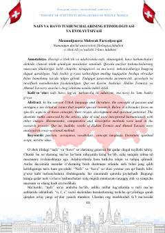

NVNafs va havo tushunchalarining tilshunoslik va tasavvuf nuqtai nazaridan ilmiy tahlili.
Ushbu ilmiy maqola o'zbek tilidagi 'nafs' va 'havo' tushunchalarining kelib chiqishi, etimologiyasi va ma'noviy evolyutsiyasini tahlil qiladi. Muallif Qur'oni Karim, hadislar hamda Hakim Termiziy va Ahmad Yassaviy asarlari asosida ushbu tushunchalarning badiiy va falsafiy talqinlarini qiyosiy metodlar yordamida o'rganadi.